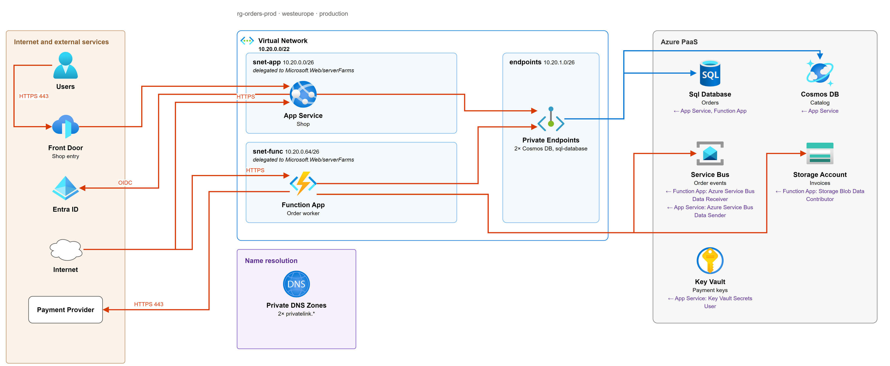

The live value, not the guardrail: the first apply changes nothing.
04 · Review
Review the picture. Hardening is your call.

infra-decisions.md
Departures from the guardrails
Storage · public accesstoday enabled · rule disabled?
Key Vault · public accesstoday enabled · rule disabled?
Service Bus · local authtoday enabled · rule disabled?
Microsoft.Web/connectionsunmapped · no question set?
Signed off ✓
05 · Render
Imported, not re-created. The plan proves it.
import { to = module.storage.module.this.azapi_resource.this id = var.adopt_ids["storage-account"]}# decision: storage-account.networking.public_network_accesspublic_network_access_enabled = false# hardened in review
11 resources adopted
4 role assignments imported, no 409
2 locks · 9 diagnostic settings imported
Plan: 11 to import, 0 to add, 2 to change, 0 to destroy the two you hardened, nothing else
AI notice: this teaser was built by an AI (Claude Code). unclick is a concept, not built yet: the order platform, its diagram (drawn by the plugin's diagram script from a hand-written spec), the counts and the plan are illustrative, not from a real run.
Space pauses, R restarts, F goes fullscreen. Fullscreen hides these controls for a clean screen recording.